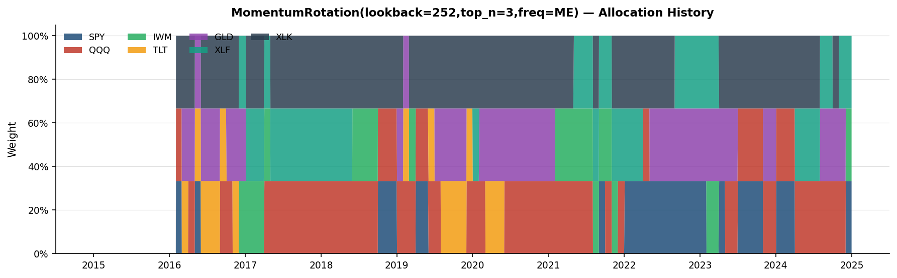
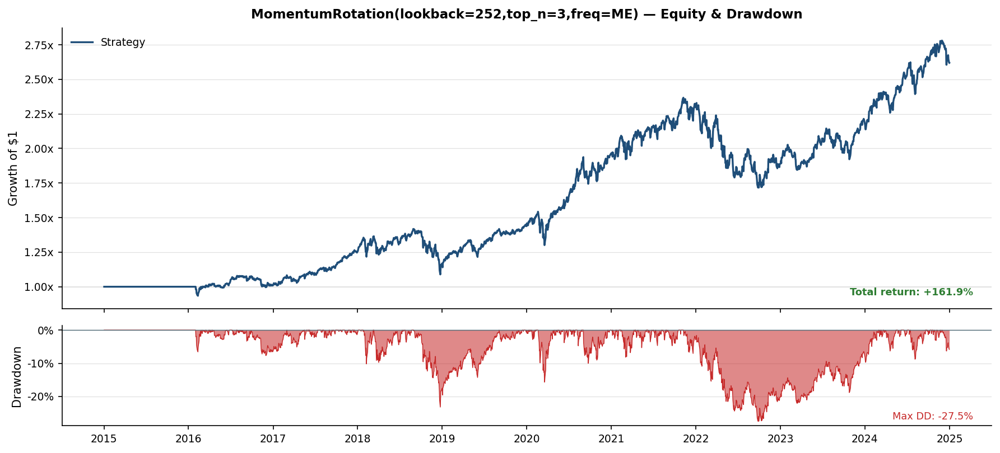
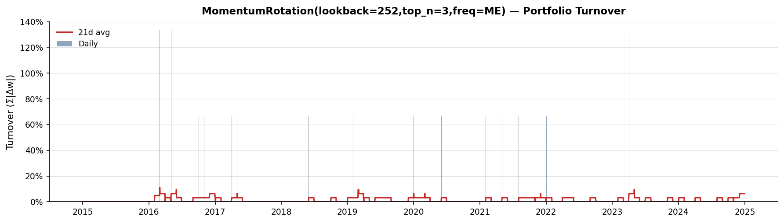
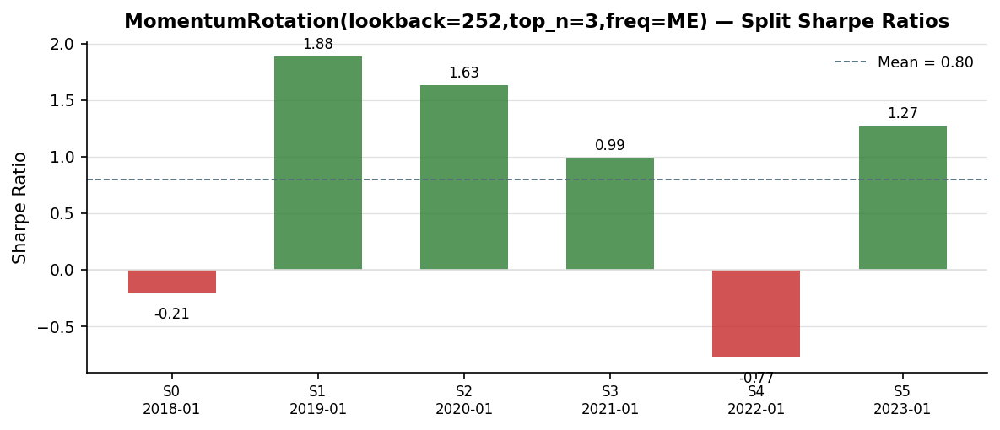
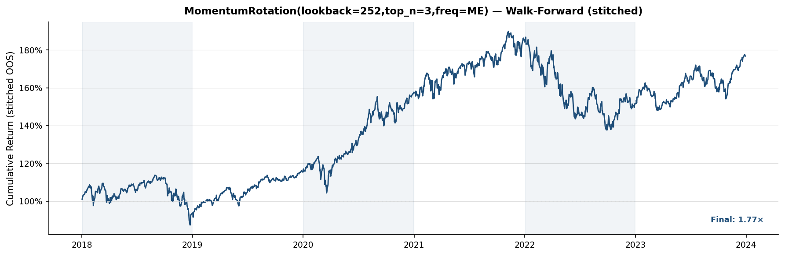

Hypothesis: Assets exhibiting strong trailing 12-month price performance will continue to outperform on a risk-adjusted basis over the subsequent 1–3 months, on average and across varied market regimes.
Economic rationale: Momentum persistence in cross-sectional asset returns is attributed to three reinforcing mechanisms:
1. *Investor underreaction* — Fundamental information is absorbed slowly into prices. Market participants anchor to prior valuations and revise incrementally, creating predictable near-term drift in the direction of the most recent fundamental change. 2. *Institutional herding* — Risk-budgeting constraints, tracking-error mandates, and performance-chasing capital flows amplify and extend trends beyond what fundamentals alone justify. 3. *Regime persistence* — Macroeconomic regimes (growth, inflation, risk-off) tend to persist for multiple months, sustaining consistent leadership across equity sectors and cross-asset categories.
Signal construction: Trailing 252-day total return serves as the momentum signal. The 12-month window is long enough to capture genuine trend persistence while short enough to avoid overlap with the value horizon (24–36 months) at which return reversal dominates. Assets are ranked cross-sectionally each rebalance period; the top 3 of 7 by momentum score are selected and equal-weighted.
Rebalance policy: Month-End rebalancing balances two competing objectives: capturing regime persistence across several weeks without accumulating excessive transaction-cost drag. Higher-frequency rebalancing would capture incremental alpha but inflate costs; lower-frequency rebalancing would miss month-to-month leadership transitions.
Key risks and limitations:
Scope of this analysis: This strategy is not presented as a definitive source of live alpha. It is a vehicle for demonstrating a complete, institutionally-rigorous research process: data infrastructure, signal engineering, look-ahead prevention, walk-forward validation, and failure mode analysis. *The methodology is the product.*
Data source: Yahoo Finance daily OHLCV data, ingested via yfinance and persisted to local Parquet files for reproducibility. All prices are adjusted closing prices.
Alignment policy: Inner join across all universe constituents — only trading days on which every asset has a valid price are retained. This eliminates NaN-driven look-ahead in cross-sectional ranking.
Missing value policy: Forward-fill up to a configurable limit (default: 5 trading days) for isolated gaps caused by exchange holidays or data vendor gaps. Gaps exceeding the limit remain NaN and are surfaced in diagnostics rather than silently filled. Over-cleaning (excessive interpolation) introduces bias by smoothing market structure.
Coverage: 2516 trading days from 2015-01-02 to 2024-12-31 across 7 assets.
| Asset | NaN Count | Ann. Return | Ann. Volatility |
|---|---|---|---|
| SPY | 0 | 12.1% | 17.7% |
| QQQ | 0 | 18.5% | 21.8% |
| IWM | 0 | 8.8% | 22.5% |
| TLT | 0 | -2.6% | 15.3% |
| GLD | 0 | 8.5% | 14.1% |
| XLF | 0 | 11.3% | 22.3% |
| XLK | 0 | 20.1% | 23.3% |
All backtests use a strictly vectorized, look-ahead-safe execution framework. The critical invariant: no information from period *t* enters the position that earns the return of period *t*.
Timing convention:
| Step | Action | When |
|---|---|---|
| Signal computed | Momentum scores calculated from all prices ≤ day *t* | Close of day *t* |
| Position entered | Computed weights applied to portfolio | Open of day *t+1* |
| Return realized | Portfolio return earned | Close of day *t+1* |
Implementation: applied_weights = weights.shift(1). The strategy never observes the return it will receive when deciding to trade. The first row of every backtest has a zero position — the portfolio is flat until the first valid signal propagates through the one-day lag.
Positions are flat for the first 252 trading days during momentum warm-up (insufficient price history for ranking).
Portfolio return computation per period:
`
gross_return_t = sum_i( weight_{i,t-1} * asset_return_{i,t} )
transaction_cost_t = sum_i( |weight_{i,t} - weight_{i,t-1}| ) * (5 / 10_000)
net_return_t = gross_return_t - transaction_cost_t
equity_curve_t = product_{s<=t}( 1 + net_return_s ), anchored at 1.0
drawdown_t = ( equity_t - max_{s<=t} equity_s ) / max_{s<=t} equity_s
`
Transaction cost model: One-way costs of 5 bps are applied to each unit of absolute portfolio weight change. Cost is incurred only on actual weight changes — during forward-fill periods between rebalances, weights are unchanged and no cost is deducted.
Turnover definition: Daily turnover = sum of absolute weight changes across all assets per period. Monthly average turnover of X% indicates X% of portfolio value was rotated per rebalance event (one-way).
Signal-to-portfolio pipeline:
`
prices[t-lookback : t]
→ trailing_return_i = price[t] / price[t-lookback] - 1 (per asset)
→ cross_sectional_rank_i (higher momentum = higher rank)
→ top_3_mask (boolean selection)
→ equal_weight = 1/3 per selected asset
→ forward_fill to daily index
→ shift(1) [look-ahead prevention]
→ portfolio_weights applied in backtest engine
`
Rebalance frequency: month-end. Selection size: top 3 by trailing 252-day return.
Rebalance history: 48 rebalance events over the backtest period.
Recent rebalances (most recent last):
| Date | Holdings | Entered | Exited |
|---|---|---|---|
| 2023-07-03 | QQQ, SPY, XLK | SPY | GLD |
| 2023-11-01 | GLD, QQQ, XLK | GLD | SPY |
| 2024-01-03 | QQQ, SPY, XLK | SPY | GLD |
| 2024-04-02 | QQQ, XLF, XLK | XLF | SPY |
| 2024-08-01 | GLD, QQQ, XLF | GLD | XLK |
| 2024-10-01 | GLD, QQQ, XLK | XLK | XLF |
| 2024-11-01 | GLD, QQQ, XLF | XLF | XLK |
| 2024-12-03 | IWM, SPY, XLF | IWM, SPY | GLD, QQQ |
*Date shown is the position-entry date (signal computed one trading day prior per the shift(1) convention).*
| Metric | Value |
|---|---|
| Annualized Return | 0.1013 |
| Annualized Volatility | 0.1532 |
| Sharpe Ratio | 0.7063 |
| Max Drawdown | -0.2748 |
| Calmar Ratio | 0.3685 |
| Hit Rate | 0.4921 |
Why chronological walk-forward validation?
Financial time series are non-stationary. Random k-fold cross-validation — standard in i.i.d. machine learning — introduces look-ahead bias when applied to sequential data: a test fold drawn from 2018 can "learn from" training data from 2020 if folds are randomly assigned. This fundamentally overstates out-of-sample performance.
Chronological rolling validation ensures the model is always tested on data it has never seen in forward time — the only valid simulation of live deployment. Each test window immediately follows its training window, with no overlap and no data from the future entering the training set.
Validation type: rolling
| Parameter | Value |
|---|---|
| gap_days | 0 |
| step_months | 12 |
| test_months | 12 |
| train_months | 36 |
Split timeline:
| Split | Train Start | Train End | Test Start | Test End | OOS Sharpe | OOS Return | OOS Max DD |
|---|---|---|---|---|---|---|---|
| 0 | 2015-01-02 | 2017-12-29 | 2018-01-02 | 2018-12-31 | -0.21 | -6.4% | -23.2% |
| 1 | 2016-01-04 | 2018-12-31 | 2019-01-02 | 2019-12-31 | 1.88 | 23.1% | -9.2% |
| 2 | 2017-01-03 | 2019-12-31 | 2020-01-02 | 2020-12-31 | 1.63 | 36.5% | -15.7% |
| 3 | 2018-01-02 | 2020-12-31 | 2021-01-04 | 2021-12-31 | 0.99 | 16.9% | -8.2% |
| 4 | 2019-01-02 | 2021-12-31 | 2022-01-03 | 2022-12-30 | -0.77 | -17.9% | -26.3% |
| 5 | 2020-01-02 | 2022-12-30 | 2023-01-03 | 2023-12-29 | 1.27 | 16.9% | -10.4% |
Out-of-sample equity curves are in the Figures section. Per-split stability metrics are in the Diagnostics section.
Known failure modes for momentum rotation strategies:
Identified drawdown windows (> 5% peak-to-trough):
| Drawdown Start | Trough | Recovery | Max DD | Duration |
|---|---|---|---|---|
| 2022-02-10 | 2022-09-27 | 2024-01-19 | -27.5% | 708d |
| 2018-10-10 | 2018-12-24 | 2019-07-24 | -23.2% | 287d |
| 2020-03-09 | 2020-03-18 | 2020-04-06 | -15.7% | 28d |
Worst out-of-sample split:
Overall risk assessment:
This appendix presents detailed diagnostic tables for in-depth analysis. The Walk-Forward Stability table surfaces per-split performance variance; consistent Sharpe ratios across splits indicate a regime-independent signal, while high variance suggests the strategy is sensitive to specific market conditions encountered in individual periods.
| Metric | Value |
|---|---|
| Splits | 6 |
| Mean Sharpe | 0.7988 |
| Std Sharpe | 1.0596 |
| Positive-Sharpe rate | 66.7% |
| Mean annualised return | 11.53% |
| Mean max drawdown | -15.48% |
| Worst max drawdown | -26.31% |
Per-split results:
| Split | Test Start | Test End | Sharpe | Return | Max DD |
|---|---|---|---|---|---|
| 0 | 2018-01-02 | 2018-12-31 | -0.2066 | -6.39% | -23.21% |
| 1 | 2019-01-02 | 2019-12-31 | 1.8833 | 23.15% | -9.16% |
| 2 | 2020-01-02 | 2020-12-31 | 1.6324 | 36.54% | -15.68% |
| 3 | 2021-01-04 | 2021-12-31 | 0.9891 | 16.88% | -8.16% |
| 4 | 2022-01-03 | 2022-12-30 | -0.7743 | -17.89% | -26.31% |
| 5 | 2023-01-03 | 2023-12-29 | 1.2691 | 16.90% | -10.38% |
| Field | Value |
|---|---|
| Experiment | example_momentum_rotation |
| Strategy | MomentumRotation(lookback=252,top_n=3,freq=ME) |
| Created | 2026-05-24T14:32:50.919049+00:00 |
Universe: SPY, QQQ, IWM, TLT, GLD, XLF, XLK
Date range: 2015-01-01 to 2024-12-31
Strategy type: MomentumRotation
| Parameter | Value |
|---|---|
| lookback | 252 |
| rebalance_freq | ME |
| top_n | 3 |
Transaction cost: 5.0 bps
Validation: rolling





Report version: 1 Generated: 2026-05-25T12:40:31.741756+00:00 Source experiment: example_momentum_rotation